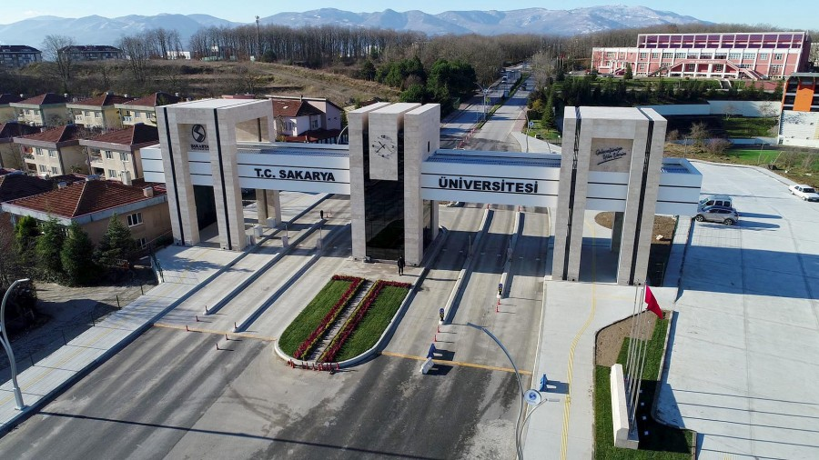

ÖZGEÇMİŞ
Eğitim hayatıma Peyami Safa İlköğretim Okulu'nda başladım.İlk 5 sene okulumu burada okudum.Daha sonra ailem daha iyi bir eğitim almam için
burs kazandığım özel okula göndermeye karar verdiler bu okulun adı da Birikim Koleji idi.Bu okulda sadece 1 sene okudum iyi arkadaşlıklar edindim.
Bu okuldan da ayrılma nedenim daha iyi bir okuldan burs alma nedenimdi.Bu senenin ardından Doğa Koleji'nde 1 sene okudum .7 Sınıf eğlenceler içerisinde
ve belki de 8 senenin en eğlenceli yıllarına sahiplik yaptı.8. sınıfa geldiğimde ise özel okulun çok da önemli olmadığını düşünüp evime yakın olan Necip Fazıl
Kısakürek Ortaokuluna yazıldım.Burası bir devlet okuluydu ve sorumlulukları benim için daha hafifti.Bu sayede derslerime bireysel olarak daha fazla odaklanabildim.
Lise'yi Bahçelievler Anadolu Lisesi'nde okudum.Üniversite tercihlerimin ilkinde beni büyük hayalkırıklığı ve mutsuzluğa iten Uludağ Üniversitesi İnşaat Mühendisliği Bölümünü
Kazandım.Fakat burası benim hayallerimde bana yardımcı olacak gibi durmuyordu. Bu okuldan da yatay geçiş yapıp Sakarya Üniversitesi Bilgisayar Mühendisliği Bölümünde okumaya başladım.Şu anda güncel olarak
Sakarya Üniversitesi Bilgisayar Mühendisliği Bölümü 1.Sınıf Öğrencisiyim.